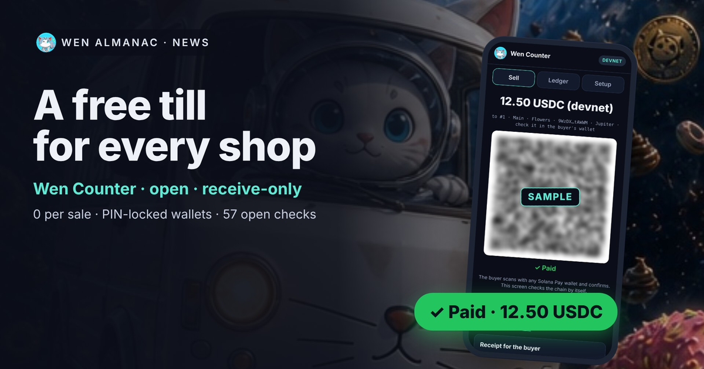
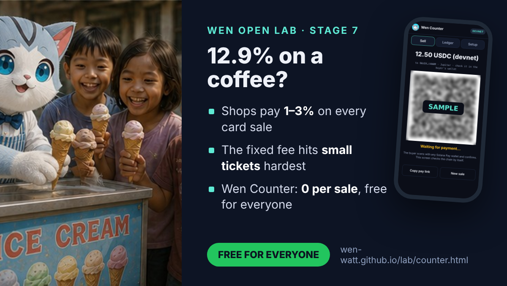
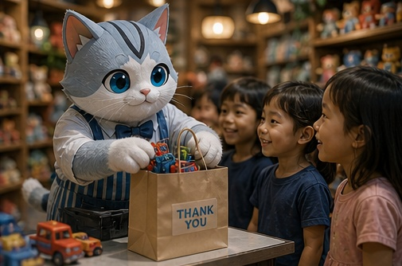
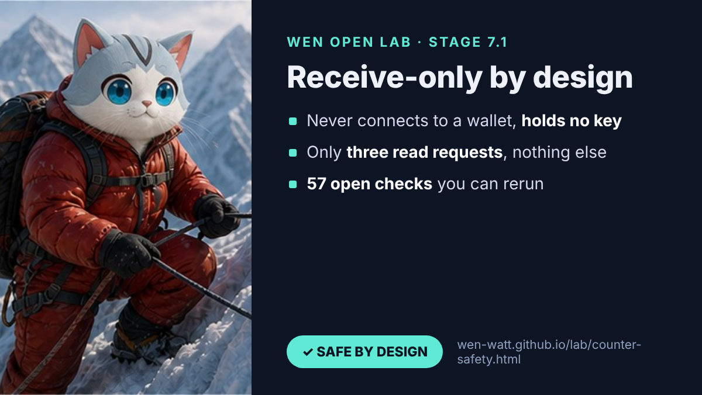
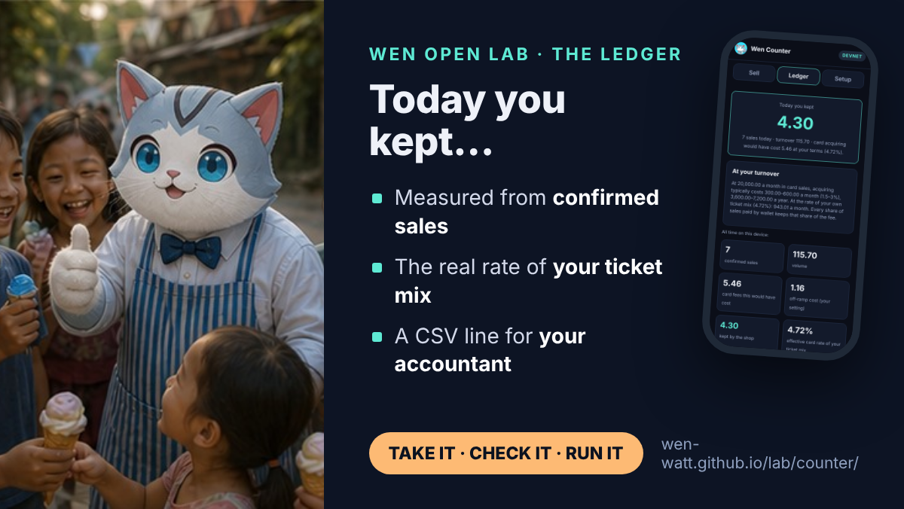
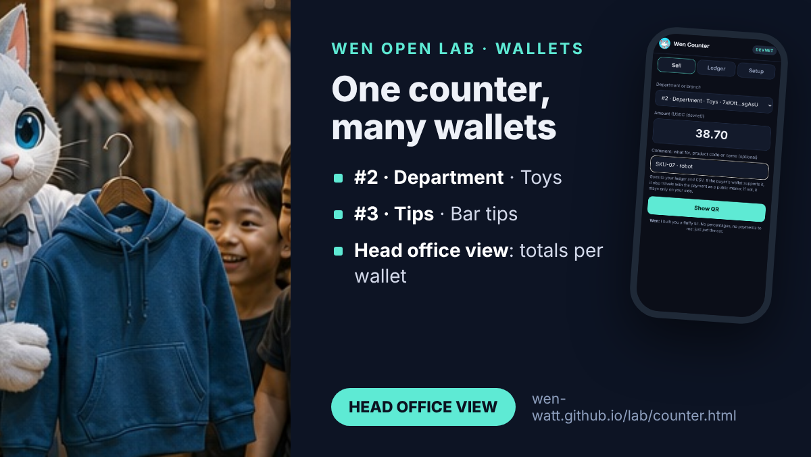
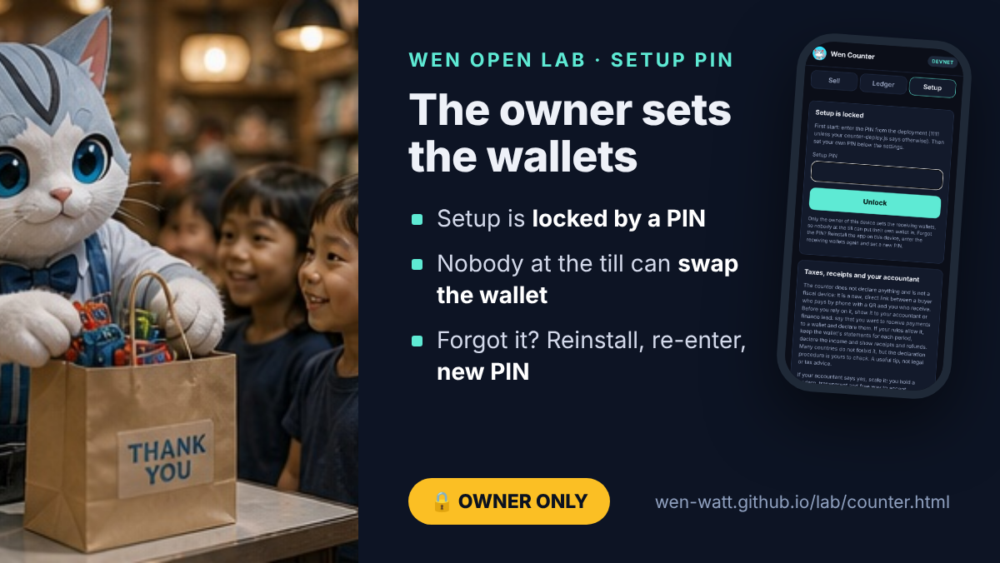
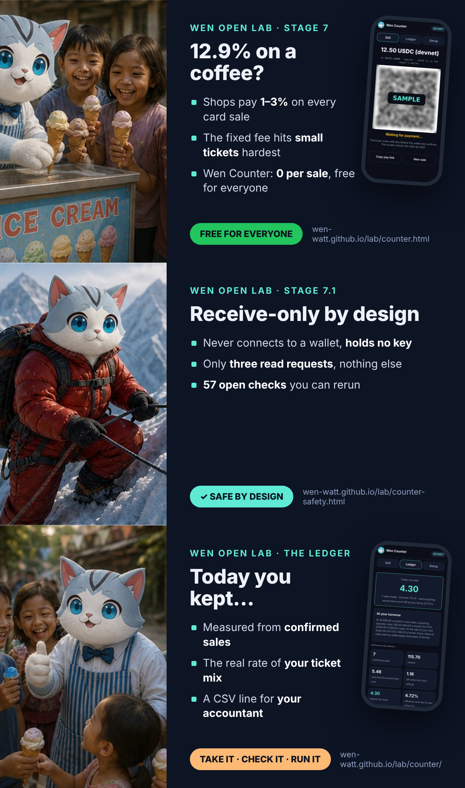

Wen Counter: A Free, Open Till for Every Shop
Almanac news Written by the almanac itself. Every claim links to a page, a file or a check you can repeat.

Today the Wen Open Lab opens its biggest free, open solution so far: Wen Counter, a till that lives in a web page. Type the amount, show a Solana Pay QR, and the chain confirms the sale. No server, no app store, no card data, no fee per sale. A pizzeria, a florist, a toy shop or a chain of stores can run its own till, for free.
Open the counter →Read the solutionSafety and 57 checksDownload the kit (.zip)
Why: the toll on every card sale
US merchants paid $187.2 billion in card fees in 2024 (source). Shops pay roughly 1–3% on every card sale, and the fixed part of the fee hurts small tickets most: on a 3-dollar coffee a published plan of 2.9% + 30¢ takes 12.9% (source). With Wen Counter the till costs 0 and there is no fee per sale; the buyer’s wallet pays only the Solana network fee, 5,000 lamports per signature (source).

Your own till, in five steps
- Take the tool: open the counter on the phone or tablet at your till, or download the kit.
- Create a wallet in a Solana wallet app you trust.
- Register it in Setup, behind your own PIN.
- Paste the receiving address: the counter checks it on-chain. That is your open, free till.
- Manage the money in your own wallet: refunds, purchases, transfers, records for your tax return.
Voilà: your ready acquiring mechanism. Your own Wen Counter.

One till for every kind of counter. Pictures: Wen at work in a toy shop, a street grill, a pizzeria and a clothes shop.
Receive-only by design
The counter never connects to a wallet, never asks it to sign and holds no key. In its code it may send only three read requests: getSignaturesForAddress, getTransaction and getAccountInfo. There is no path from the counter, or from anyone who copies it, to the shop’s money. A payment counts only when the reference, the recipient, the token, the amount and the success all match on-chain.

Today you kept…
The ledger shows the card fee you did not pay, measured from confirmed sales at your card terms, and the effective rate of your own ticket mix. Export a CSV for your accountant: today, this week, month, quarter, year, last year or any period.

One counter, many wallets
Departments, branches or tips: wallet #1 plus wallets #2..X, each with a type and a name, for example #2 · Department · Toys or #3 · Tips · Bar tips. At the till the cashier picks where the sale goes, the payment is verified against that wallet, and the head office view adds up sales per wallet. For a chain: a till wallet per branch, and in the evening the day’s takings move to the company wallet, for example a multisig.

The owner sets the wallets
Setup is locked by a PIN, so nobody at the till can put their own wallet in. The first PIN is a deployment parameter (simple 1111), and the owner changes it at the first start. Forgot it? Reinstall the app, enter the receiving wallets again, set a new PIN: nothing on-chain is affected, and a swap cannot stay hidden, because the address is shown on every QR.

Everything a shop needs, nothing it doesn’t
- Comment: what for, a product code or a name. It lands in the ledger, the receipt and the CSV, and travels with the payment as a memo where the buyer’s wallet supports it (a memo is public).
- Receipt: a QR, the text or a receipt NFT for the buyer. Not a fiscal receipt: check your country’s rules.
- Refund: a new payment from your own wallet, with
refund:plus the original transaction in the memo, so anyone can match the two. - Currencies: USDC, SOL, WEN and JUP, USDT optional, or any SPL token by its mint.
Seven answers before you scale
Who it is for (crypto communities, events, online shops for their own audience, not mass adoption), several departments, your own RPC and the wallet side for a real company, fiscal rules and your accountant, responsibility and the open audit, languages bound to the core fingerprint, and USDT. All seven are written down on the solution page.
You use the solution on your own responsibility. The mechanism takes nothing, holds nothing and charges nothing; it follows the Solana network’s rules, and your wallet is yours. Check receipts and declarations with your accountant.
57 open checks: break it if you can
25 checks for the logic, 13 that prove by reading the code that the counter cannot sign, send or reach a wallet, and 19 in a real phone browser with fake wallets, hostile text, the setup PIN and the head office view. One WCP-1 block fingerprint identifies the original build. Read the code, rerun the checks, and tell us what you find in the public repository (issue tracker).

The open story
Wen is not just a cat drifting through space. Wen is a gathering of useful things: an idea, and the strongest free pool and mechanism for real life, with fewer intermediaries and costs cancelled where they were always unnecessary. Take everything open: Solana, SPL Token, WEN, Token-2022, the test builds and the notes of the Wen Open Lab, and build your own solutions.

Written up in full: for developers on dev.to (the code, the five-point check, the 57 checks) and for shops and finance on Hashnode (who controls the money, seven answers before you scale).
Everything in one place
- Stage 7 · Wen Counter: the solution: pitch, the Wen cycle, numbers, code, rights, roadmap
- Stage 7.1 · Safety: receive-only, the setup PIN, the open audit, 57 checks
- The counter itself and the kit (Apache-2.0, credit Wen)
- Wen Open Lab roadmap

Questions people ask
What is Wen Counter?
A free, open point of sale that lives in a web page. It shows a Solana Pay QR, checks the chain and marks the sale paid. No server, no app store, no card data, no fee per sale.
Can Wen Counter move my money?
No. It is receive-only by design: it never connects to a wallet, holds no key and sends only three read requests. Refunds and transfers are made in your own wallet.
Can a cashier change the receiving wallet?
Not without the setup PIN. The owner of the device sets the wallets; forgot the PIN: reinstall, enter the wallets again, set a new PIN.
Who is responsible when a shop uses it?
The shop. The mechanism takes, holds and charges nothing and follows the Solana network's rules. Check receipts and declarations with your accountant.
Spoken by Wen, for the community. Texts CC BY 4.0, code Apache-2.0. Devnet first, example code, not audited. Educational content, not financial, tax or legal advice.